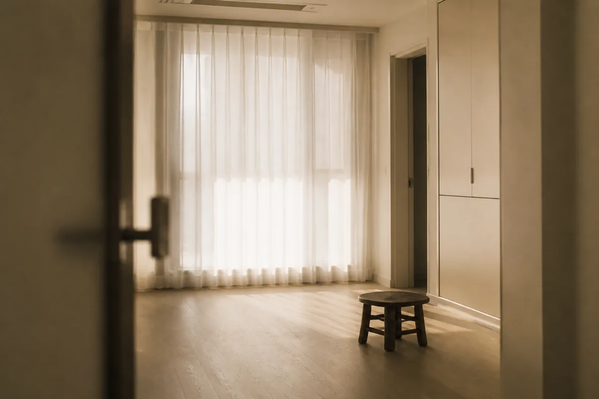

옥천읍 주택·원룸
읍내 오래된 주택과 원룸. 좁은 골목과 주차 사정을 확인해 소형 차로 나눠 반출합니다.

옥천 전지역 · 읍과 면 단위까지
옥천읍 주택·원룸부터
청산·이원 마당 있는 시골집까지
장작과 농기구가 쌓인 광, 잡목이 든 마당까지
집이 비도록 정리합니다.
About 옥천
옥천은 옥천읍 원도심의 주택과 원룸, 청산면·이원면·안남면의 농가와 시골집으로 나뉩니다. 읍내는 경부선과 국도가 지나 교통은 좋지만 골목이 좁고 주차 공간이 부족해, 대형가전과 가구를 내릴 때 인력과 시간이 더 필요합니다. 청산면은 과수원과 함께 오래된 한옥·농가가 남아 있어 마당과 광의 적재물이 많은 편입니다.
고령 가구가 많아 부모님 댁 정리와 빈집 정리 상담이 대부분입니다. 오래된 시골집은 장작과 농기구, 폐자재가 광에 쌓여 있고 마당에는 잡목과 잔가지가 자라 있습니다. 시골집정리로 살림과 함께 마당·광을 비우고, 처리한 물품의 방법을 미리 알려드린 뒤 진행합니다. 방치된 빈집은 정리 후 환기와 소독까지 권합니다.
Where
집의 생김새가 다르면 정리 방법도 달라야 합니다. 현장에 맞춰 인원과 차량을 정합니다.
읍내 오래된 주택과 원룸. 좁은 골목과 주차 사정을 확인해 소형 차로 나눠 반출합니다.
과수원이 딸린 농가와 오래된 한옥. 광의 장작과 농기구까지 함께 정리합니다.
마당의 장독·고물과 폐자재, 잔가지. 마을 안길 폭에 맞춰 인원과 차량을 정합니다.
산자락 외곽 주택과 빈집. 잡목 제거와 환기·소독까지 함께 진행합니다.
Process
현장 사진 몇 장과 대략적인 위치만 알려주시면 옥천 기준으로 정리 범위와 비용의 큰 틀을 안내드립니다. 상담은 무료입니다.
직접 방문해 남길 것과 정리할 것을 유족과 함께 확인합니다. 확인이 끝난 뒤 최종 비용과 일정을 확정합니다.
정리와 생활폐기물·가전 수거, 소독을 진행하고 보관품을 전달합니다. 월세·전세 주택과 원룸은 원상복구 상태까지 함께 확인합니다.
FAQ
Area
대전·세종·충청 10개 지역을 같은 팀이 직접 방문합니다. 가까운 지역 안내를 눌러보세요.
목록에 없는 인근 지역도 방문 가능한지 확인해 드립니다.
전화 010-4366-7275
Contact
정리할 공간의 사진과 대략적인 위치를 남겨주시면 확인 후 연락드립니다. 급하신 경우 전화가 가장 빠릅니다.